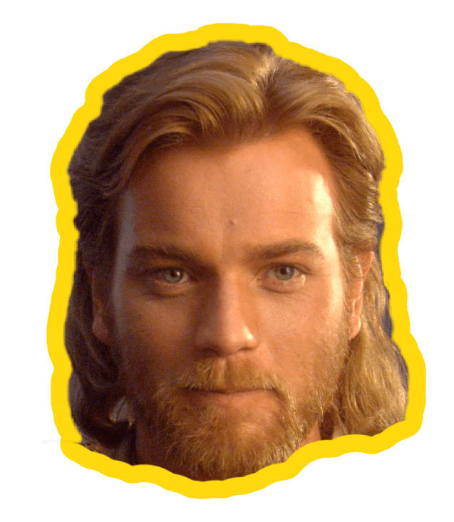
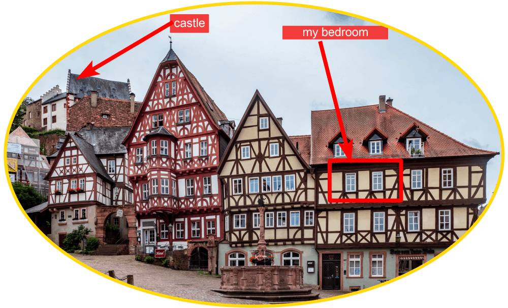

ut me
ut meHello there

and welcome! ! I'm Toby-Wan
Short(ish) bio
I was born in Munich and lived there for about 8 years, until my family (I have 2 older brothers)
moved to a small, dreamy town called Miltenberg. This was my bedroom
window, believe it or not:

When I finished school, i moved to Fribourg, Switzerland to study Communication and Media Science - 50% of my courses were in French, which was very hard. So I moved back to Munich after a few years and finished my Bachelors in Media Management there.
I started doing some freelance Online Marketing work during my studies, and then had my first proper jobs in Marketing after. Since I was interested in E-learning and Online Publishing, I first joined a startup company called Pinktum, who make video courses and then switched to projektmagazin, a platform offering articles, courses and lots of other resources for project managers and other people involved in projects.
I started as a full on Digital Marketing Manager, but my role soon evolved into a hybrid between Marketing and being a Product Owner - working with our external Development Teams on the website, coming up with new features or improvements, working with different teams to understand their processes and requirements, writing User Stories and bug reports, planning Sprints and testing new features.
In 2019, I moved to the UK to live with my girlfriend after a few years of long-distance relationship. So I became self-employed, but continued to mostly work for projektmagazin as an external consultant. And that's where we are now!
Education history
- Abitur, Karl-Ernst-Gymnasium Amorbach, Germany - 2005 (I think equivalent to A-Levels and GSCE)
- B.A. in Media and Communications Sciences, Université de Fribourg, Switzerland - 2005 to 2009 (unfinished)
- B.A. in Media and Communications Management, Mediadesign Hochschule Munich - 2009
- Prince 2 Foundation Certification - 2017
- Professional Scrum Product Owner Certification - 2022
Job experience
- Self-Employed; Online Marketing Consultant; 2010 – 2013
- Pinktum GmbH; Online Marketing Manager; 2013-2014
- projektmagazin; Online Marketing Manager & Product Owner; 2014-2018
- Self-Employed; Online Marketing Consultant & Product Owner; 2019 – now